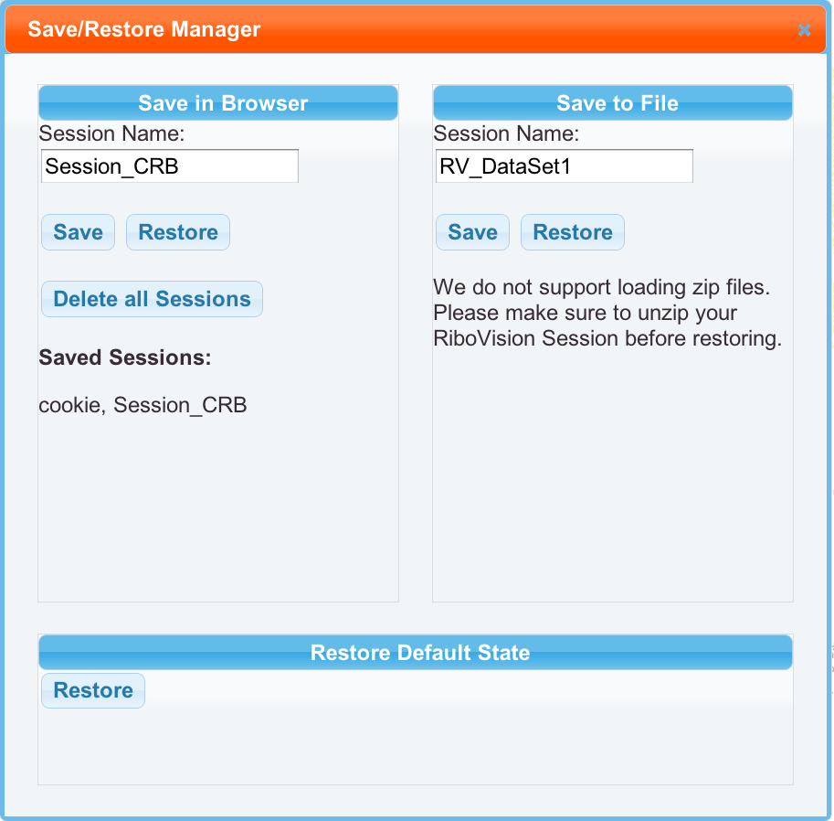

Users can save their current work using the Save/Restore Manager tool from the Tool Bar. It has a wrench icon, 2nd from the bottom. All the layers and selections can be saved to disk for later retrieval. The default is to save to your browser's LocalStorage cache, similar to a cookie, except they can be larger and don't have expiration dates. Restoring from the LocalStorage will save the current model, locally, including layers, selections, loaded data types etc., but requires to download the actual data sets from the server again. This feature does keep Imported data private. Alternatively, users can save their work to a text file on a computer. This method would allow the users to restore the work session even without an internet connection. Right now, this requires sending a copy to the server. We will fix that soon. Data is quickly deleted without looking at it.
You may name your saved sesson with the "Session Name" box. For file mode, this is only a courtesy, as you can rename the file to whatever you want. For Browser mode, you need to type in the name of the saved session to restore it. We provide a list of previously saved sessions to help you remember.